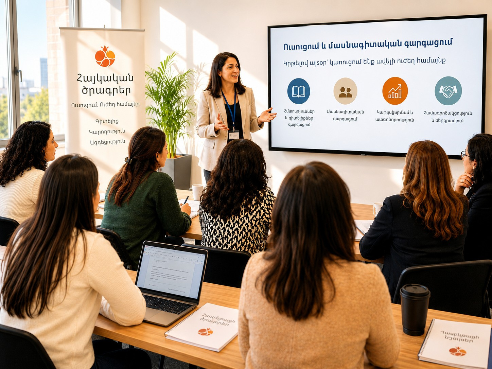

Professional Development
Customized, research-based training that equips Armenian DLI educators and leaders to teach with excellence, confidence, and cultural depth.
Armenian DLI Demands Its Own Training
Armenian Dual Language Immersion programs face a persistent shortage of qualified educators and no centralized place to turn for consistent, specialized training. Teachers entering this model are often left to build their own instructional practice in isolation, with no shared pipeline preparing the next generation to fill the gap as programs grow. ADLEA's Professional Development program closes that distance, offering training that is created specifically for the Armenian DLI context rather than adapted from generic dual language models, so that every educator, whether brand new to the classroom or decades into their career, has a clear and supported path toward mastery.

Built Around the Educators It Serves
Training Designed for the Armenian DLI Model
Built specifically around the Armenian dual immersion context, addressing the unique demands of biliteracy, translanguaging, and cultural integration that generic dual language training does not cover.
Support for Every Career Stage
Structured pathways for both new educators building their foundational practice and veteran teachers refining and expanding their instructional expertise.
Leadership-Focused Sessions for Administrators
Dedicated training for program administrators and instructional leaders, equipping them to guide, sustain, and grow Armenian DLI programs at the school and district level.
The Framework Behind the Training
ADLEA's professional development is built on a research-grounded framework that treats biliteracy not as two separate literacy programs running side by side, but as a unified, simultaneous, and carefully designed process. At its core is the understanding that strength in one language actively supports and accelerates growth in the other. Every training ADLEA offers translates this evidence base into concrete classroom practice, equipping educators with tools that are immediately applicable and designed to deepen over time.
Linguistic Interdependence
What a learner knows in one language transfers. Concepts, strategies, and awareness built in Armenian strengthen the partner language, and vice versa.
Simultaneous Biliteracy Development
Both languages are developed from the start, not sequentially. The Bridge, the intentional cross-linguistic instructional moment, is the cornerstone of this approach.
Translanguaging as Pedagogy
Learners' full linguistic repertoire is a cognitive resource, not a problem to manage. Pedagogical translanguaging is planned, purposeful, and distinct from unstructured code-switching.
Backward Design for Biliteracy
Units begin with bilingual performance tasks and work backward through language objectives, content integration, and cultural relevance.
Where Deep Armenian DLI Teaching Begins
The following represent a selection of the core topics ADLEA's professional development addresses — a curriculum that continues to grow with the field and the needs of Armenian DLI programs.
Planning for Biliteracy
Backward design from bilingual performance tasks through language objectives, using a Biliteracy Unit Framework to architect coherent bilingual units across content and grade levels.
Cross-Linguistic Transfer
Cross-linguistic transfer in DLI operates across five dimensions: conceptual knowledge, metacognitive and metalinguistic strategies, pragmatic language use, specific linguistic elements, and phonological awareness. ADLEA's training equips educators to recognize and leverage each type in their Armenian DLI instructional planning.
Translanguaging Pedagogy
Designing intentional, pedagogical translanguaging moments that honor learners' full linguistic repertoire, distinguishing between spontaneous language mixing and planned, purposeful cross-language moves.
The Bridge
Teaching the Bridge as the explicit instructional moment where learners move between languages, using structured cross-linguistic comparison to deepen metalinguistic awareness and academic language in both.
Oral Language Development
Building oracy as a literacy objective in its own right, from structured academic discussion in Armenian and the partner language to oral language routines that develop bilingual sentence complexity across grade levels.
Educator Wellbeing and Sustaining Practice
Equipping teachers with the inner resources and professional community structures to sustain joyful, culturally grounded instruction over the long arc of a career.
Learning Experiences Built for Real Educator Lives
Workshops and Institutes
In-person and virtual sessions designed as standalone modules that educators can attend independently or as a connected sequence.
Virtual Coaching and Communities of Practice
Ongoing cohort-based professional learning, peer observation cycles, and coaching that extend learning beyond a single session and into the sustained rhythm of the school year.
Expert-Led Series and Keynotes
Multi-session deep dives with field researchers, master teachers, and thought leaders, connecting Armenian DLI educators to the global bilingual education community.
Want to Bring This to Your Program?
Reach out to learn how ADLEA can support your district, school, or community.
Contact Us